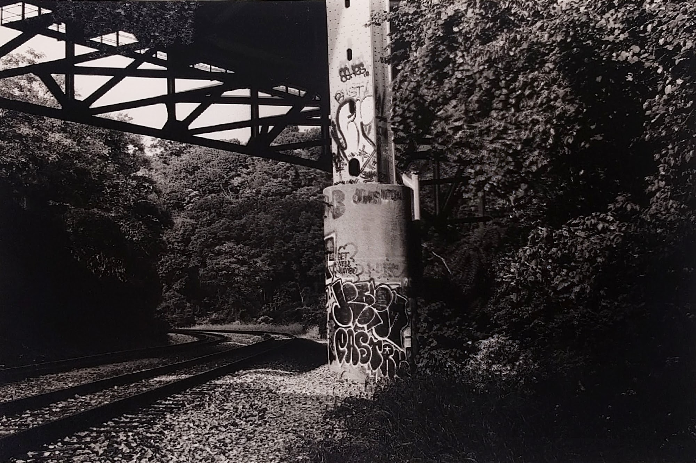
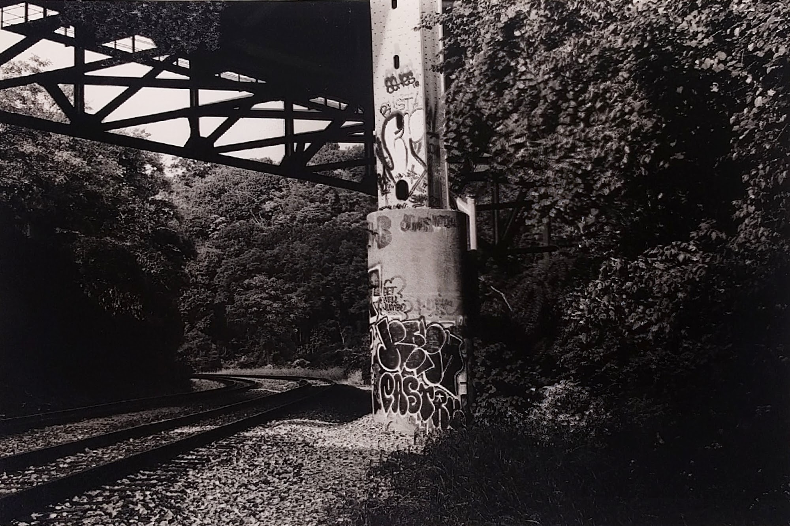

Early fall 2017, I went on a search for graffiti in Pittsburgh and found a lot! Took a bunch of snaps and developed them on Ilford HP5 35mm. To get most of these I had to bike around Pittsburgh (mostly in Lawrenceville and Oakland). Never knew Pittsburgh had so much street art.
 
